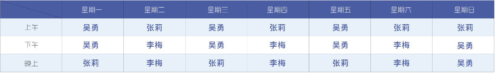

我院儿童保健科成立于1996年，成立至今已有24年历史。
现有医务人员13人，其中副主任医师3名，主治医师7名，早期综合发展训练师1名，护士2名。
拥有多功能儿童保健评测系统，心理测试软件，营养分析软件，德国进口听性脑干反应测试仪，美国进口的伟伦视力筛查仪，骨密度检测仪。
门诊电话：028-38235760


专家介绍
预防接种
我院儿童保健科成立于1996年，成立至今已有24年历史。
现有医务人员13人，其中副主任医师3名，主治医师7名，早期综合发展训练师1名，护士2名。
拥有多功能儿童保健评测系统，心理测试软件，营养分析软件，德国进口听性脑干反应测试仪，美国进口的伟伦视力筛查仪，骨密度检测仪。
预防接种
我院儿童保健科成立于1996年，成立至今已有24年历史。
现有医务人员13人，其中副主任医师3名，主治医师7名，早期综合发展训练师1名，护士2名。
拥有多功能儿童保健评测系统，心理测试软件，营养分析软件，德国进口听性脑干反应测试仪，美国进口的伟伦视力筛查仪，骨密度检测仪。
预防接种
我院儿童保健科成立于1996年，成立至今已有24年历史。
现有医务人员13人，其中副主任医师3名，主治医师7名，早期综合发展训练师1名，护士2名。
拥有多功能儿童保健评测系统，心理测试软件，营养分析软件，德国进口听性脑干反应测试仪，美国进口的伟伦视力筛查仪，骨密度检测仪。
出诊安排
返回此页面顶部
医院地址
眉山市东坡区府街92号
联系信息
妇产科电话： 028-38235760
儿科电话： 028-38225907
自媒体矩阵
微信公众号： 眉山市东坡区妇幼保健院
新浪微博号： 眉山东坡妇幼
今日头条号： 坡区妇幼保健院
网易新闻号： 眉山市东坡区妇幼保健院
搜狐新闻号： 东坡区妇幼保健院

微信公众号
网络备案： 川ICP备1601453号-1
眉山市东坡区妇幼保I
技术支持：汤谷互动